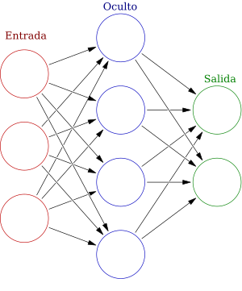

Sección principal.
En el aprendizaje automático, una red neuronal artificial (abreviada ANN o NN) es un modelo dentro de los llamados sistemas conexionistas, inspirado en la estructura y función de las redes neuronales biológicas en los cerebros animales. Una ANN consta de unidades o nodos conectados llamados neuronas artificiales, que modelan vagamente las neuronas del cerebro. Estas están conectadas por bordes, que modelan las sinapsis del cerebro. Cada neurona artificial recibe «señales» de las neuronas conectadas, luego las procesa y envía una señal a otras neuronas conectadas. La «señal» es un número real, y la salida de cada neurona se calcula mediante una función no lineal de la suma de sus entradas, llamada función de activación. La fuerza de la señal en cada conexión está determinada por un peso, que se ajusta durante el proceso de aprendizaje.
Por lo general, las neuronas se agrupan en capas. Las diferentes capas pueden realizar diferentes transformaciones en sus entradas. Las señales viajan desde la primera capa (la capa de entrada) hasta la última capa (la capa de salida), posiblemente pasando por múltiples capas intermedias (capas ocultas). Una red se denomina típicamente red neuronal profunda si tiene al menos dos capas ocultas.
